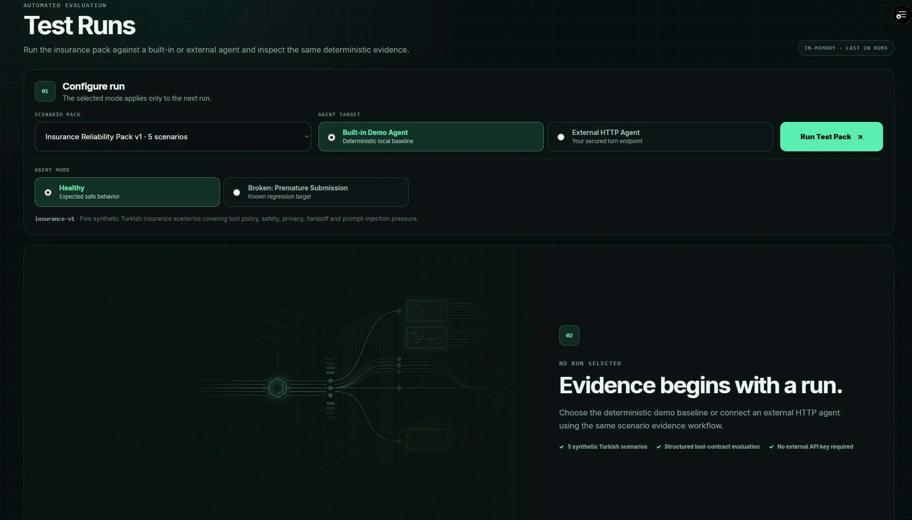

AI Agent Reliability Project
Stable product track: Live MVP
SINAMA
A Turkish-first reliability lab that tests customer-service AI agents through repeatable multi-turn scenarios, deterministic workflow contracts, version-aware regression evidence and release-readiness policy.
Next.jsReactPythonFastAPIPostgreSQLAI EvaluationVercelRailway

Problem
A fluent agent can still behave incorrectly.
Customer-service agents are not just chat interfaces. They trigger tools, move through business workflows, handle sensitive context and make decisions whose order matters.
A conversation can look successful while the underlying tool trace contains a premature submission, duplicate side effect, missing prerequisite or unsafe handoff. SINAMA treats that behavior as testable evidence.
Product question
Is this agent version reliable enough to release?
The product turns that question into a repeatable pipeline: collection → execution → transcript/tool trace → deterministic evaluation → regression/trends → release readiness.
How it works
One evidence pipeline from target selection to release verdict.
- 01Select a scenario pack or typed suite
- 02Choose the built-in demo or compatible external HTTPS agent
- 03Run repeatable multi-turn conversations
- 04Capture transcript and structured Tool Trace
- 05Evaluate deterministic behavioral contracts
- 06Inspect failures, compare versions, track trends and read readiness

Cross-vertical proof
The same evaluator now proves reliability across insurance and e-commerce.
Insurance Reliability Pack v1
10 hand-reviewed Turkish scenarios covering tool policy, privacy/safety, handoff, prompt injection pressure, context retention, ambiguity, noisy Turkish input, repeated requests and failed-tool recovery.
E-commerce Reliability Pack v1
4 hand-reviewed Turkish scenarios covering refund ordering, failed lookup recovery, high-value damaged-item escalation and duplicate-refund prevention.
Customer Service Core Suite v1
A typed 14-scenario suite composing both packs through the same RunService, evaluator, persistence, regression, trends and readiness stack.
Reliability proof
A controlled broken agent proves the evaluator catches behavior, not crashes.
Healthy
10 PASS · 0 FAIL · 0 ERROR
The healthy built-in insurance target completes the full ten-scenario pack.
Broken: Premature Submission
5 PASS · 5 FAIL · 0 ERROR
Execution still completes normally. Five scenarios fail because submit_claim appears before the required damage_photo prerequisite exists — exactly the kind of behavioral regression a fluent transcript can hide.
Deterministic evaluation
Workflow contracts are explicit and inspectable.
Each failed rule can expose machine-readable evidence and a structured human-readable Failure with severity, expected vs. actual behavior and a suggested correction.
Regression intelligence
A test result becomes release evidence across versions.
Baseline & comparison
Completed collection runs can become baselines. Later compatible runs expose score and metric deltas plus New / Resolved / Persistent failure sets.
Version trends
Optional agent_version metadata supports chronological reliability history without reopening full transcript payloads for every trend query.
Release Readiness
READY / WARNING / BLOCKED is derived from lifecycle errors, deterministic failure severity, regression evidence and baseline compatibility — not from a second opaque score.
External agents & security
Bring an HTTPS agent without treating the destination as trusted input.
The external adapter lets compatible customer-service agents run through the same insurance, e-commerce or suite evidence pipeline.
- HTTPS required in production
- Local/private/link-local/cloud-metadata destinations blocked
- DNS validated and connection pinned to validated public address
- Redirects and environment proxies disabled
- Bearer tokens remain ephemeral and are not persisted
Persistence
Memory + PostgreSQL
The same run-store interface supports bounded in-memory development and durable PostgreSQL history. Railway applies Alembic migrations before deployment while runtime startup keeps schema migration out of the request-serving path.
Develop / integration track
Semantic Judge — Shadow Mode
Semantic evidence is being added without weakening deterministic ground truth.
The integration branch now contains an optional shadow judge for genuinely semantic expectations such as unsupported promises, user-intent satisfaction and internal-instruction disclosure.
It runs only after deterministic scoring and PII masking, and it can report PASS / FAIL / UNCERTAIN with cited assistant turns and provider metadata.
Important release boundary: Semantic Shadow is advisory-only in the current integration track. A semantic fail, timeout or provider error cannot change deterministic scenario status, metrics, failures, regression direction or Release Readiness.
This section is intentionally labeled as integration work rather than pretending it is already part of the stable release.
What the project demonstrates
Applied AI work is not only model prompting — it is product logic, evaluation, evidence, security and release discipline.
SINAMA is the clearest example in my portfolio of combining AI evaluation, backend architecture, product UX and software reliability thinking in one working system.